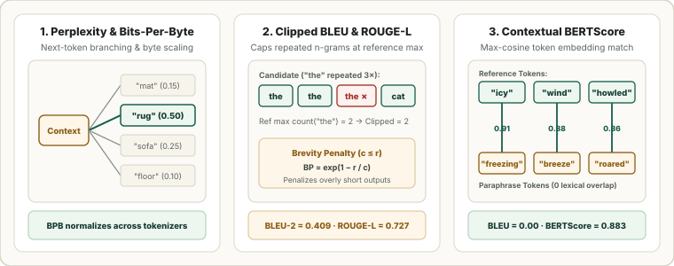

Classical NLP & Text Generation Metrics: Perplexity, Bits-Per-Byte, BLEU, ROUGE, WER, and BERTScore
Evaluating language models and sequence-to-sequence generators progresses through three families of metrics: information-theoretic likelihood (Perplexity and tokenizer-invariant Bits-Per-Byte), lexical overlap and edit distance (BLEU, ROUGE, chrF++, WER), and contextual embedding similarity (BERTScore).

1. Perplexity (PPL) and Tokenizer-Invariant Bits-Per-Byte (BPB)
For an autoregressive model $p_\theta(\mathbf{w}_{1:T}) = \prod_{t=1}^T p_\theta(w_t \mid w_{<t})$, Perplexity ($\operatorname{PPL}$) exponentiates the average per-token cross-entropy loss $\mathcal{L}_{\text{CE}}$ (in nats):
If a model is uniformly uncertain among $k$ choices at every step ($p_\theta = 1/k$), then $\operatorname{PPL} = k$ (the effective branching factor). However, Perplexity cannot be compared across different tokenizers: a larger vocabulary compresses the same text into fewer, harder-to-predict tokens, inflating per-token $\mathcal{L}_{\text{CE}}$ even when total sequence probability is much higher. Dividing total log-likelihood in bits by the raw UTF-8 byte length $N_{\text{bytes}}$ gives tokenizer-invariant Bits-Per-Byte ($\operatorname{BPB}$):
| Model (on a $1{,}000$-Byte Passage) | Tokens $T$ | Per-Token $\mathcal{L}_{\text{CE}}$ (nats) | Perplexity $\exp(\mathcal{L}_{\text{CE}})$ | Total NLL ($T\cdot\mathcal{L}_{\text{CE}}$) | Bits-Per-Byte ($\operatorname{BPB} \downarrow$) |
|---|---|---|---|---|---|
| Model A ($32\text{k}$ BPE) | $250$ | $2.40$ | $11.02$ (looks better) | $600\text{ nats}$ | $\frac{600}{1000\ln 2} = \mathbf{0.8656}$ |
| Model B ($128\text{k}$ BPE) | $180$ | $3.10$ | $22.20$ (looks worse) | $\mathbf{558\text{ nats}}$ | $\frac{558}{1000\ln 2} = \mathbf{0.8050}$ (winner) |
2. Machine Translation: Clipped BLEU and Brevity Penalty
To prevent candidates like "the the the" from gaming precision, BLEU (Papineni et al., 2002) clips the count of each candidate $n$-gram $g$ at its maximum count in any single reference translation $R_m$, and multiplies the geometric mean of $p_1,\dots,p_N$ by an exponential Brevity Penalty ($\operatorname{BP}$) whenever candidate length $c = |C|$ is shorter than reference length $r = |R|$:
Because BLEU is a geometric mean, any zero $n$-gram match ($p_n = 0$) collapses raw sentence-level BLEU to $0$; BLEU should be computed at the corpus level (via SacreBLEU) or with smoothing for individual sentences.
3. Summarization, ASR & Semantic Overlap: ROUGE, WER, and BERTScore
| Metric | Formula / Definition | Primary Domain & Strengths |
|---|---|---|
| ROUGE-$N$ | $\frac{\sum_{g \in \text{ngrams}_n(R)} \min(\text{Count}_C(g), \text{Count}_R(g))}{\sum_{g \in \text{ngrams}_n(R)} \text{Count}_R(g)}$ | Summarization recall: checks what fraction of reference $n$-grams appear in the candidate. |
| ROUGE-L | $F_\beta$ of $R_{\text{lcs}} = \frac{\operatorname{LCS}(R, C)}{|R|}$ and $P_{\text{lcs}} = \frac{\operatorname{LCS}(R, C)}{|C|}$ | In-order (non-contiguous) sentence-level structural overlap via Longest Common Subsequence. |
| METEOR / chrF++ | Stem/synonym alignment ($F_{\beta=3}$) / Character $n$-gram $F_{\beta=2}$ | Morphologically rich languages and code where subword inflections break exact word match. |
| WER / CER ($\downarrow$) | $\frac{S + D + I}{N_{\text{ref}}}$ (Substitutions $+$ Deletions $+$ Insertions) | Speech recognition (ASR) and OCR; can exceed $1.0$ if insertions $I$ are large. |
| BERTScore | Harmonic mean of IDF-weighted $\max_j (\hat{\mathbf{e}}_{x_i}^\top \hat{\mathbf{e}}_{\hat x_j})$ | Contextual embedding cosine alignment; rewards valid paraphrases with zero surface overlap. |
4. Worked Numerical Example: BLEU-2, ROUGE-L, and WER
Compare Reference $R = \text{"the cat sat on the mat"}$ ($r = 6$ words) against Candidate $C = \text{"the the cat on mat"}$ ($c = 5$ words):
| Metric | Step-by-Step Components | Plugged-in Calculation | Score |
|---|---|---|---|
| Clipped $p_1$ | $\text{Count}_C(\text{"the"})=2$ clipped at $\text{Count}_R(\text{"the"})=2$; $\text{cat}, \text{on}, \text{mat}$ match once | $\frac{2 + 1 + 1 + 1}{5} = \frac{5}{5}$ | $\mathbf{1.0000}$ |
| Clipped $p_2$ | Candidate bigrams: $(\text{the},\text{the}), (\text{the},\text{cat}), (\text{cat},\text{on}), (\text{on},\text{mat})$; only $(\text{the},\text{cat})$ is in $R$ | $\frac{1}{4}$ | $\mathbf{0.2500}$ |
| BLEU-2 | $\operatorname{BP} = \exp(1 - 6/5) = e^{-0.2} \approx 0.8187$; geometric mean $\sqrt{p_1 p_2} = 0.50$ | $0.8187 \times \sqrt{1.00 \times 0.25}$ | $\mathbf{0.4094}$ |
| ROUGE-L ($F_1$) | $\operatorname{LCS}(R, C) = (\text{"the"}, \text{"cat"}, \text{"on"}, \text{"mat"})$ of length $4$; $R_{\text{lcs}} = \frac{4}{6}, P_{\text{lcs}} = \frac{4}{5}$ | $\frac{2 \times 4}{6 + 5} = \frac{8}{11}$ | $\mathbf{0.7273}$ |
| WER ($\downarrow$) | $1$ Insertion ($\text{"the"}$) $+$ $2$ Deletions ($\text{"sat"}, \text{"the"}$) $= 3$ Levenshtein edits | $\frac{3}{6}$ | $\mathbf{0.5000}$ |
5. Reference Python Implementation
import math
from collections import Counter
from typing import Sequence
def clipped_precision(cand: Sequence[str], ref: Sequence[str], n: int) -> float:
c_ng = [tuple(cand[i:i + n]) for i in range(len(cand) - n + 1)]
r_ng = Counter(tuple(ref[i:i + n]) for i in range(len(ref) - n + 1))
return sum(min(cnt, r_ng[g]) for g, cnt in Counter(c_ng).items()) / len(c_ng) if c_ng else 0.0
def bleu_n(cand: Sequence[str], ref: Sequence[str], max_n: int = 2) -> float:
c, r = len(cand), len(ref)
bp = 1.0 if c > r else math.exp(1.0 - r / c)
ps = [clipped_precision(cand, ref, n) for n in range(1, max_n + 1)]
return bp * math.exp(sum(math.log(p) for p in ps) / max_n) if all(p > 0 for p in ps) else 0.0
def rouge_l_f1(cand: Sequence[str], ref: Sequence[str]) -> float:
dp = [[0] * (len(cand) + 1) for _ in range(len(ref) + 1)]
for i, rw in enumerate(ref, 1):
for j, cw in enumerate(cand, 1):
dp[i][j] = dp[i - 1][j - 1] + 1 if rw == cw else max(dp[i - 1][j], dp[i][j - 1])
return (2.0 * dp[-1][-1]) / (len(ref) + len(cand))
def word_error_rate(cand: Sequence[str], ref: Sequence[str]) -> float:
dp = [[i + j if i * j == 0 else 0 for j in range(len(cand) + 1)] for i in range(len(ref) + 1)]
for i, rw in enumerate(ref, 1):
for j, cw in enumerate(cand, 1):
dp[i][j] = min(dp[i - 1][j] + 1, dp[i][j - 1] + 1, dp[i - 1][j - 1] + (rw != cw))
return dp[-1][-1] / len(ref)
ref, cand = "the cat sat on the mat".split(), "the the cat on mat".split()
print("BLEU-2 :", round(bleu_n(cand, ref, 2), 4))
print("ROUGE-L:", round(rouge_l_f1(cand, ref), 4))
print("WER :", round(word_error_rate(cand, ref), 4))Sources
Papineni et al., BLEU: a Method for Automatic Evaluation of Machine Translation (ACL, 2002); Lin, ROUGE: A Package for Automatic Evaluation of Summaries (ACL Workshop, 2004); Post, A Call for Clarity in Reporting BLEU Scores — SacreBLEU (WMT, 2018); Zhang et al., BERTScore: Evaluating Text Generation with BERT (ICLR, 2020).